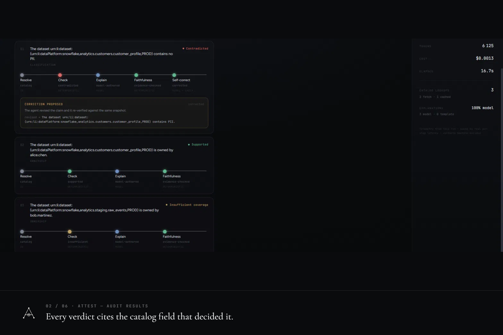
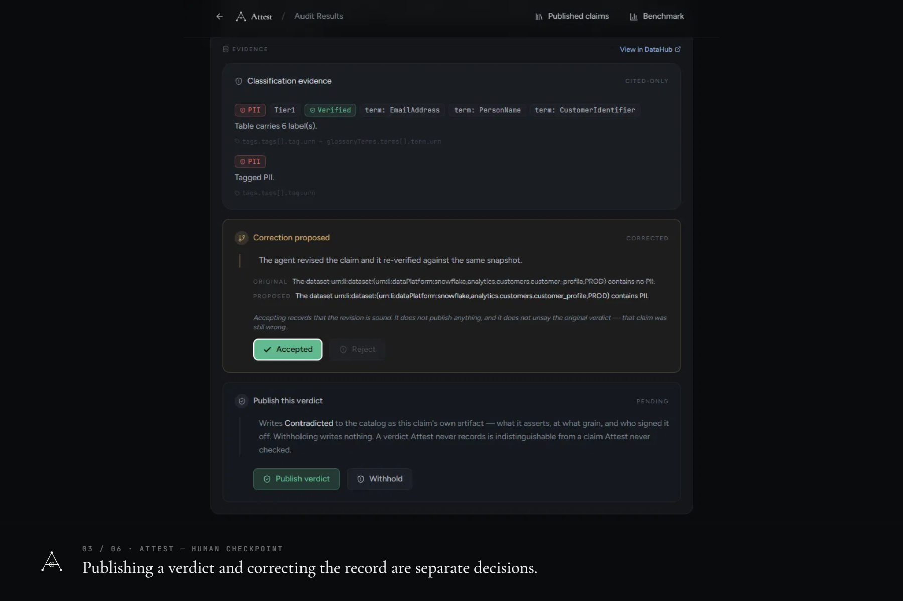
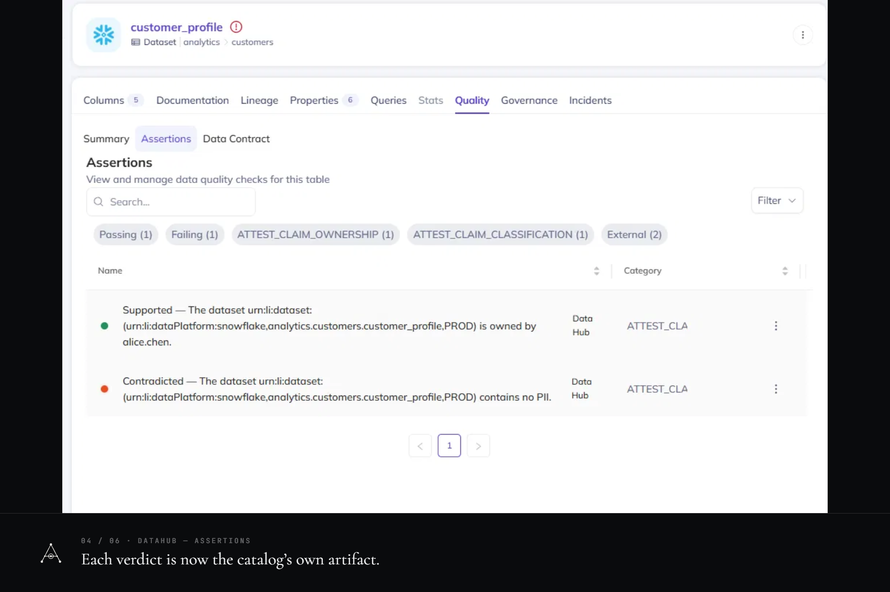
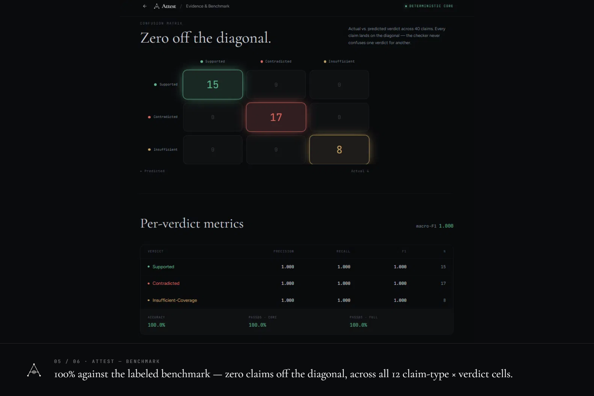
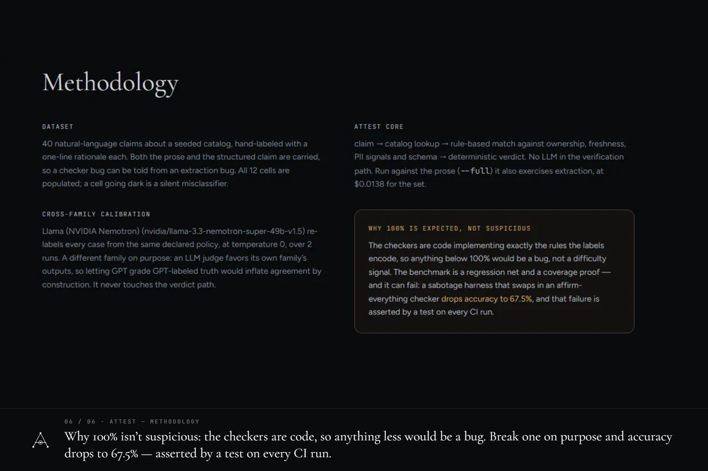

An auditor for AI agents that make claims about data. Verdicts are decided in deterministic code — zero decided by a model — published by a human, and written back into DataHub as durable assertions.
The replay is the real interface, driven by one real audit captured off the wire — nothing to install, nothing live. It refuses any question it has no recorded answer for rather than inventing one.
01 · The failure
An agent writes “customer_profile holds no PII.” The sentence sounds like the end of a task. It is actually a claim — and the catalog can check it. The table is tagged PII. Its email column is tagged PII. The catalog said so the whole time; nobody asked it.
“customer_profile holds no PII.”
The catalog holds what the claim denies: urn:li:tag:PII, plus glossary terms EmailAddress and PersonName. The claim is wrong, and the evidence is citable.
“orders_export holds no PII.”
The next table has no tags at all. “We reviewed it and it’s clean” and “nobody ever looked” are different facts — but without a third verdict, they are indistinguishable. That is why Attest has three verdicts, not two.
03 · How it works
Paste agent output. Attest parses it into discrete, checkable claims about named datasets.
Each claim is evaluated against the live DataHub catalog in plain code. No model touches the verdict.
Every verdict cites the catalog field that decided it.
Publish and accept-correction are separate decisions. Published verdicts are written back to DataHub as durable assertions — the next agent inherits them from the catalog, not from Attest.
04 · The numbers
05 · The evidence





06 · Engaging with the MCP server
Searches the live catalog by name and offers candidate datasets.
Picks one. It must then appear verbatim in the agent’s own text.
Reads the snapshot every claim about that dataset is decided against.
Date math, set membership, string comparison. No model decides.
The DataHub MCP Server is in the product. It backs Attest’s URN picker, so a human finds a dataset by typing part of its name against the live catalog instead of pasting a 90-character URN — replacing a static list generated from our own seed, which describes one catalog and is useless against any other. just discover runs it against yours and exits zero.
Nothing it returns is evidence, and that boundary is asserted rather than described. The only value discovery passes on is the entity URN, which must still appear verbatim in the agent’s own text before any claim can be made about it. So a wrong pick produces claims about an explicitly wrong URN — visible in the report and in the published artifact — never a resolution error laundered into catalog disagreement. No checker, snapshot, cache or pipeline node can import that module; the import graph is walked and asserted.
It does not back the verdict read, and that is a conclusion the measurement forced rather than a preference we started with. Attest’s catalog read already had the one-method seam an adapter would implement, so we built to it and ran the real server against all 16 seeded datasets. The server runs — compatibility is the failure everyone expects here and is not what happened; every call answered, for every dataset, without error. Field parity against the reference read diverges on 16 of 16 datasets (130 mismatches), and four of five true claims change verdict — including customer_profile.email is PII reading back Contradicted.
Its read tools are built to feed a language model, and each optimisation for that job removes something a deterministic checker needs. That makes this a finding about structured consumers, not a defect for the server’s intended use, where the compaction is a feature: a transport that is lossy for a language model is inverting for a checker, because the checker’s precision is exactly what makes it unable to shrug. Three of the four mechanisms behind it are fixable upstream, so we wrote them up with reproductions.
just spike-mcp exits non-zero by design: the day it goes green, the finding has expired and the decision is worth reopening. Full write-up and per-dataset diffs: docs/mcp-evaluation.md.
07 · Outside our own catalog
Every number above was measured against a catalog we wrote, with labels applying a policy we wrote. The benchmark says that about itself, and it is the honest weak point. So Attest was also run against DataHub’s own showcase-ecommerce datapack — 67 datasets over 7 platforms, metadata nobody here wrote a line of. Fifteen claims, $0.0077, 117 seconds.
Nothing in it is scored: no accuracy, no macro-F1, no confusion matrix. The golden benchmark is a conformance gate where 100% is the expected result, and importing that apparatus onto fifteen unlabelled claims on a foreign catalog would measure nothing. The question was narrower — does Attest produce defensible verdicts against metadata it did not design, and where does it hit its own limits? It found one before a single audit ran.
A gap our own seed could never expose.
Attest’s GraphQL query has no CorpGroup arm, so a group-owned dataset arrives with an empty owner object and every claim about it is refused. The guard failed closed, which is correct. Its diagnosis — malformed catalog response — is wrong: the response is fine, the query is incomplete, and Attest cannot tell the difference. No test here could have caught it. The seed emits corpuser owners exclusively, so the offline tier, the live tier and the 12-cell matrix are all green and the gap is invisible from inside. Documented, not fixed: a fix resting on the same seed that hid it is not a fix.
Counted correct, and named.
A sentence about a column’s glossary label came back from the decomposer as a schema claim, dropping the term URN entirely. The schema checker then answered a question nobody asked — does this column exist? — and returned the verdict the trial expected. So the receipt carries two figures and never nets them: 15/15 outcomes matched what was predeclared, fourteen assessments and one expected ClaimError, which is not a verdict — and 14 of the 15 answered the question actually asked. Banking the other one would flatter a broken decomposer.
The catalog is a near-miss on all three PII signals Attest recognises: a glossary term named literally PII, filed under a node called Classification; contains_pii where the policy names hasPII; and no completeness marker anywhere. So a column named cust_email, carrying a term whose own description reads “Subject to PII handling requirements”, comes back Insufficient-Coverage where a person would say PII. That is a declared position — structure is a declaration, a name is a guess — meeting a real catalog. The trial does not resolve it. It shows the price, with a receipt.
What this does not prove
One small curated datapack is not “works in production”, fifteen claims are not a sample of anything, and the claims were still written by the same person who wrote the checkers — the trial moves the catalog outside our control, not the claims.
08 · Try it
just setup && just check # offline, no DataHub, no API key
just up && just seed # DataHub Core v1.5.0.6, vendored pinned compose
just demo # UI and API on :8003Needs ~8 GB free. The first bring-up pulls ~12.6 GB of images, which is network-dependent; a cold boot to a healthy GMS after that is ~4.5 minutes. Local by design — a per-machine catalog is what gives every reader a clean story.
{kind=link}
{kind=link}
{kind=link}
{kind=link}
{kind=link}
{kind=link}